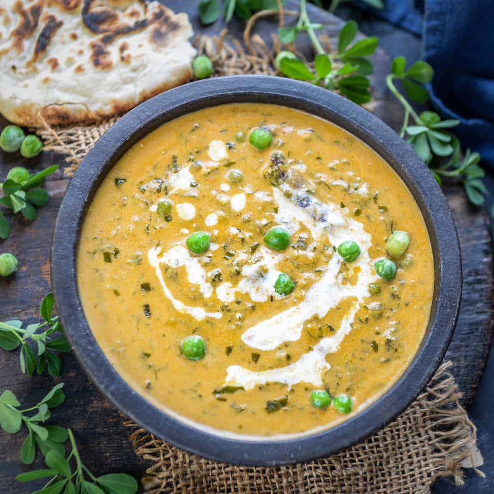

Ingredients

- 2 big onions (finely chopped)
- 1 carton heavy whipping cream
- 4 tbsp kasuri methi (dried fenugreek leaves)
- 1 big bowl of peas (boiled and drained)
- Garam masala
- 5-6 garlic cloves (grated or finely chopped)
Instructions
- Take equal amounts of oil and ghee.
- Saute onions and garlic; once done, add salt and garam masala.
- Add heavy whipping cream and wait until it thickens.
- Add kasuri methi and peas.